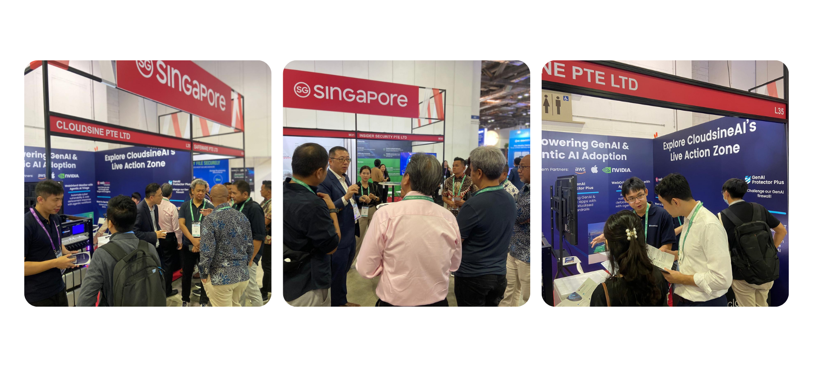
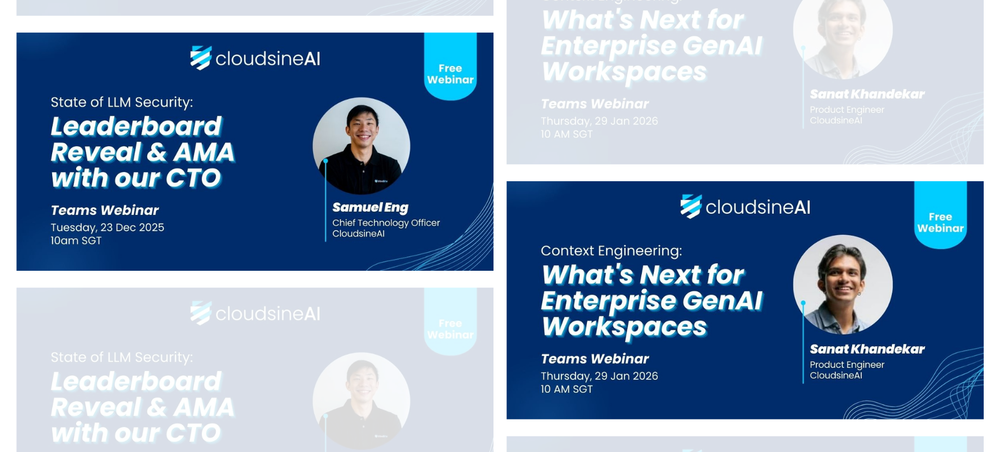

Events I Ran
Owned end-to-end event strategy across Singapore, Thailand, and Indonesia — from sponsorship negotiation and logistics to booth design, on-ground activation, and post-event lead handoff. Three event formats, one goal: pipeline.
100+ MQLs and USD $500K+ in pipeline contributed from events annually

GovWare and other key regional cybersecurity conferences — sponsorship, booth design, and on-ground activation.
View more →
Partner events and technical workshops with hyperscalers like AWS — high-value, agenda-led sessions to accelerate pipeline.
View more →
Recurring webinar programme — topic selection, speaker coordination, multi-channel promotion, and post-event lead nurture.
View more →